Gini — Viticoltori dal 1570 × VaiGustando
Lo shop online, dentro il racconto Gini
Dal racconto del vino all’acquisto, senza interrompere l’esperienza Gini. Quattro interventi sul sito, mostrati qui sulle pagine reali di ginivini.com.
Obiettivo e principio guida
Rendere acquistabili online i vini Gini lasciando intatti stile, identità e tono editoriale di ginivini.com. Il sito non diventa un e-commerce: si collega in modo naturale all’ambiente d’acquisto gestito da VaiGustando.
SHOP ONLINE in navigazione
Voce stabile nell’header, nella barra di navigazione e nel menu.
02Pagina ginivini.com/shop
Presenta la partnership e porta alla collezione Gini su VaiGustando.
03ACQUISTA ONLINE nelle Creazioni
Nel blocco ASSAPORALO, deep link alla scheda del singolo vino.
04Riferimento nei Contatti
A chi rivolgersi per ordini, spedizioni e assistenza sugli acquisti.
Percorso generale
Percorso prodotto
Percorso assistenza
La pagina ginivini.com/shop
È una pagina Gini a tutti gli effetti, con lo stesso look & feel del sito. Presenta il servizio, rassicura l’utente e mette in chiaro la partnership prima del passaggio all’e-commerce. Ha una sola CTA principale. Così il cambio di dominio non arriva a sorpresa: è la cantina stessa a indicare VaiGustando come partner.
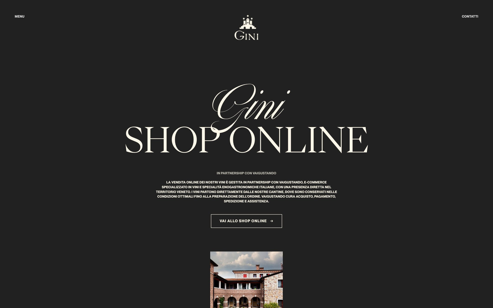
Shop online
Vi informiamo che la vendita online dei nostri vini è gestita in partnership con VaiGustando, e-commerce specializzato nella selezione e vendita di vini e specialità enogastronomiche italiane.
Partner con una presenza diretta nel territorio veneto e una particolare attenzione alle produzioni di qualità e alle realtà vitivinicole locali, VaiGustando ci permette di offrire anche online un servizio coerente con i valori che da sempre guidano il nostro lavoro.
Attraverso questa collaborazione possiamo rendere disponibile online un’ampia selezione della collezione Gini, offrendo anche la possibilità di gestire richieste specifiche, annate particolari, selezioni e riserve, compatibilmente con le disponibilità della cantina.
I vini provengono direttamente dalle nostre cantine, dove sono conservati nelle condizioni ottimali fino al momento della preparazione dell’ordine, garantendo così provenienza e corretta conservazione delle bottiglie.
VaiGustando completa il servizio gestendo l’esperienza di acquisto online, il pagamento, la spedizione e l’assistenza al cliente, con la competenza e l’affidabilità di un partner specializzato.
Vai allo shop online →Destinazione della CTA
- IT
- vaigustando.it/collections/gini-viticoltori-dal-1570
- EN
- vaigustando.com/collections/gini-viticoltori-dal-1570
- Etichetta
- VAI ALLO SHOP ONLINE · EN: GO TO THE ONLINE SHOP
- Apertura
- Nuova scheda (
target="_blank" rel="noopener"), così ginivini.com resta aperto
vaigustando.it/en, che reindirizza. Le pagine di ginivini.com/en/… devono quindi puntare a .com: gli indirizzi dei prodotti sono identici, cambia solo il dominio. Li abbiamo verificati uno per uno.
Dove arriva l’utente · Collezione Gini su VaiGustando
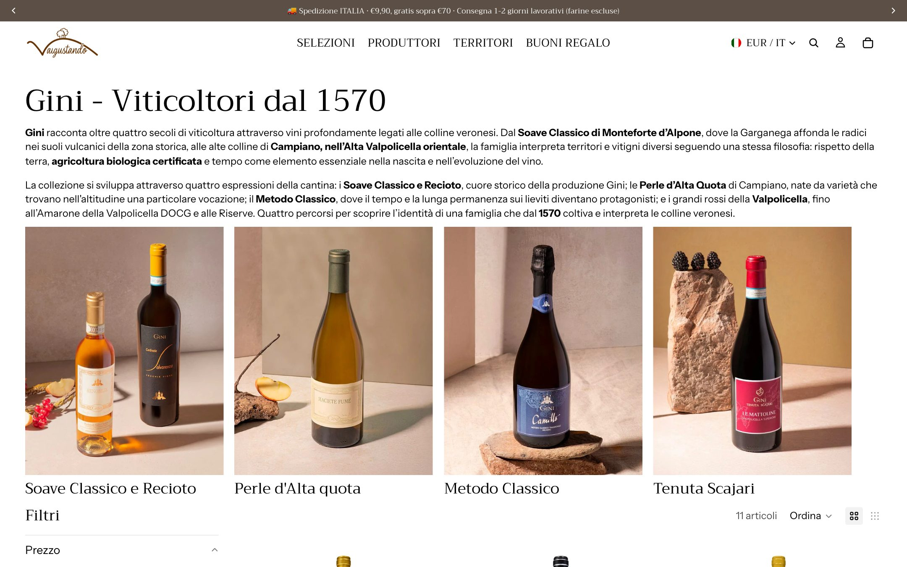
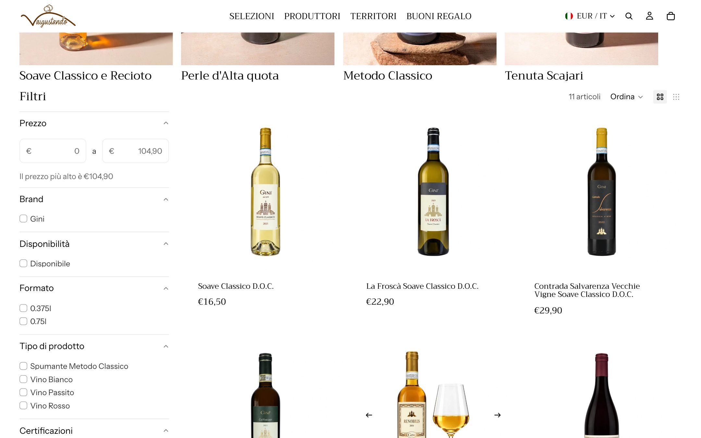
ACQUISTA ONLINE nelle Creazioni
L’impianto editoriale delle schede vino non cambia. La CTA entra solo nel blocco conclusivo ASSAPORALO, quando il racconto ha già accompagnato l’utente fra identità, territorio e prodotto. È il momento di massima intenzione: il link porta dritto alla scheda del vino su VaiGustando, senza ripassare da /shop.
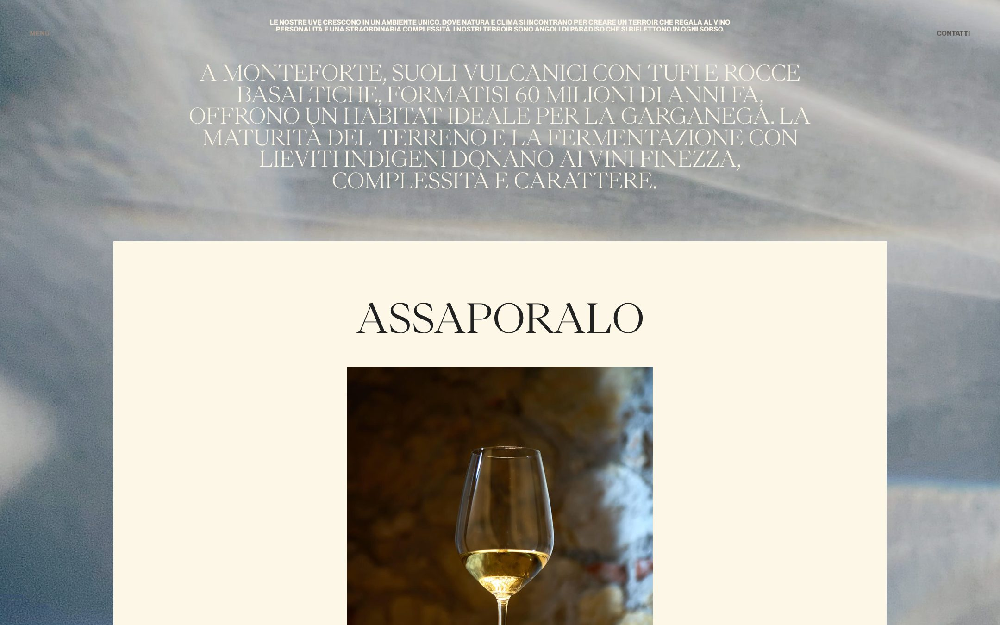
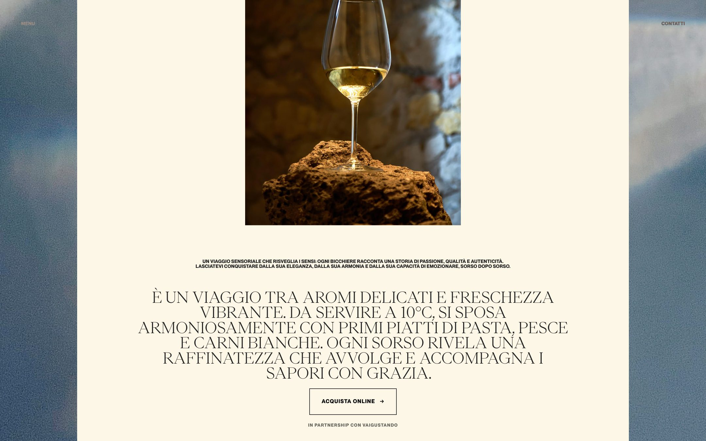
Riferimento · scheda Soave Classico D.O.C. su VaiGustando
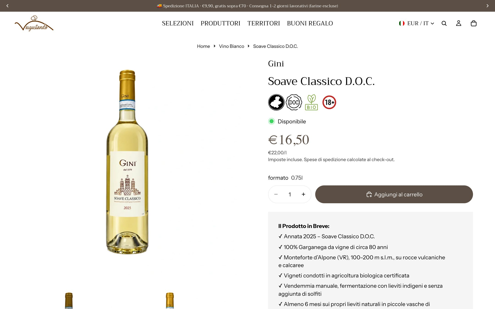
Stessa pagina da telefono
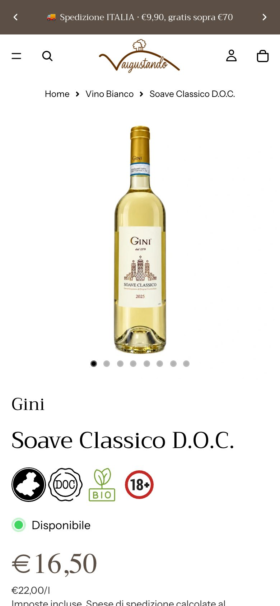
Mappa dei link: Creazioni → schede VaiGustando
11 Creazioni su 13 sono acquistabili oggi. Sorai e Olinto non sono a catalogo: lì la CTA non va messa. Il pulsante «Copia» copia il link completo dei parametri di tracciamento (sezione 05).
| Creazione Gini | CTA | Destinazione su VaiGustando |
|---|
Un riferimento per lo shop nei Contatti
Chi ha già comprato, o sta per farlo, cerca spesso «Contatti» per chiedere di una spedizione o di un ordine. Un blocco dedicato, sotto «Come contattarci», manda queste richieste all’assistenza VaiGustando e alleggerisce la casella della cantina.
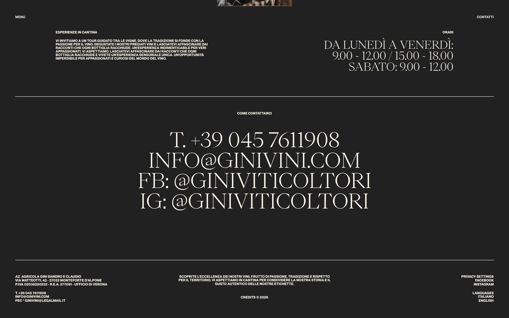
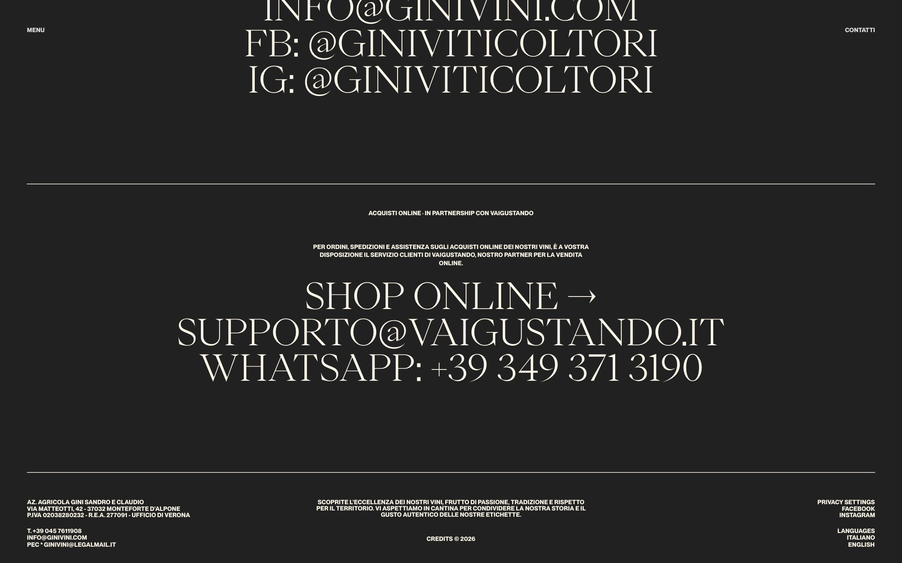
Acquisti online
Per ordini, spedizioni e assistenza sugli acquisti online dei nostri vini, è a vostra disposizione il servizio clienti di VaiGustando, nostro partner per la vendita online.
SHOP ONLINE →
SUPPORTO@VAIGUSTANDO.IT
WHATSAPP: +39 349 371 3190
Link delle voci
- Shop online
/shop(EN/en/shop)mailto:supporto@vaigustando.ithttps://wa.me/393493713190
Il canale «Supporto e vendita via WhatsApp 24/7» già attivo su vaigustando.it.- Testo EN
- “For orders, shipping and support on online purchases of our wines, please contact VaiGustando customer care, our online sales partner.”
Un’integrazione già online: Italo Cescon
La cantina Italo Cescon ha seguito lo stesso schema su cesconitalo.it. Lo citiamo per mostrare il risultato su un sito vero, che resta pienamente riconoscibile come sito di cantina. Per Gini aggiungiamo due passaggi: la pagina /shop e il blocco nei Contatti.
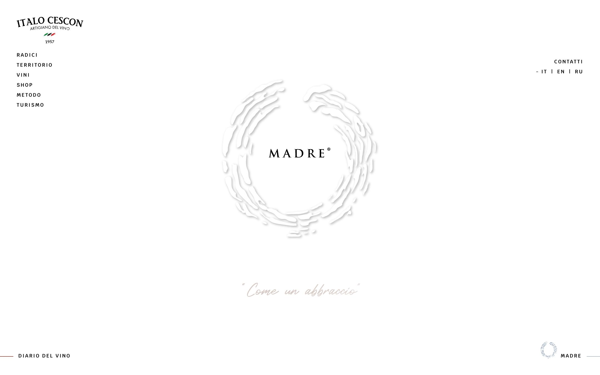
/shop.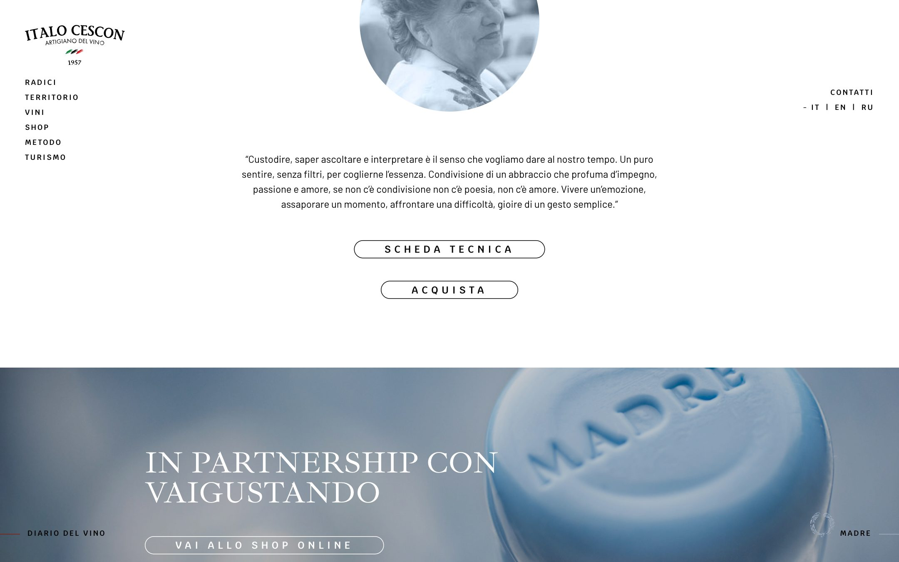
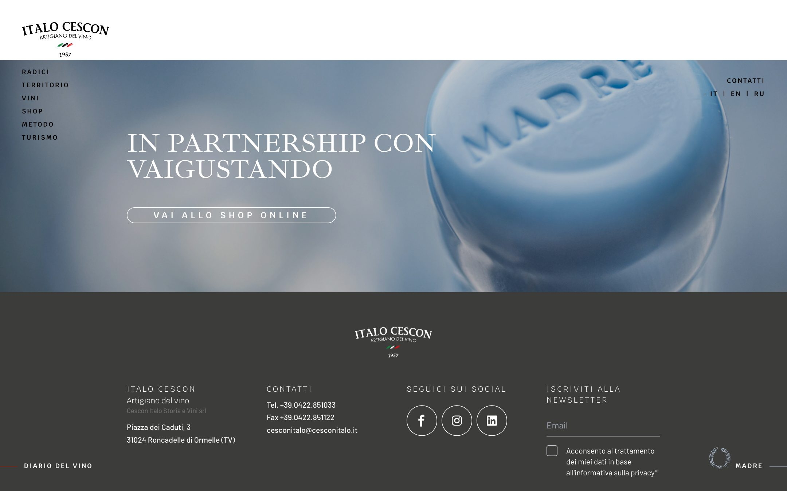
/shop.Indicazioni per il team creativo e lo sviluppo
Poche regole, che tengono il sito Gini al centro e misurano quanto contribuisce alle vendite.
- Linguaggio nativo. Le CTA usano tipografia, colori e componenti di ginivini.com: devono sembrare parte del sito, non pubblicità esterna.
- SHOP ONLINE stabile. Sempre presente in navigazione, con la stessa visibilità su desktop e mobile.
- /shop con una sola CTA. Una pagina Gini con il testo di partnership e un unico pulsante verso la collezione.
- ACQUISTA ONLINE solo dove serve. Solo nelle Creazioni disponibili su VaiGustando (vedi mappa), solo nel blocco ASSAPORALO.
- Deep link diretti. Dalla Creazione si va alla scheda del vino, non alla home dello shop: un passaggio in meno fra interesse e acquisto.
- Niente dati che cambiano. Prezzi, stock e annate acquistabili non vanno riportati sul sito Gini: li gestisce VaiGustando e restano sempre aggiornati.
- Versione inglese. Su
/enstesse voci tradotte, link verso vaigustando.com.
Tracciamento
Per misurare traffico, interesse per prodotto e contributo alle conversioni, ogni link verso VaiGustando porta i parametri UTM. Noi li leggiamo in Google Analytics sul nostro shop, a voi basta incollare i link così come sono.
| Parametro | Valore |
|---|---|
utm_source | ginivini |
utm_medium | referral |
utm_campaign | gini_shop |
utm_content | pagina_shop · assaporalo · contatti |
Esempio, CTA della pagina /shop:
Se sul sito Gini è attivo Google Analytics, conviene tracciare anche i clic su SHOP ONLINE e ACQUISTA ONLINE come eventi (ad esempio click_shop_online e click_acquista_online, con il nome del vino come parametro). Così vediamo anche quanti utenti arrivano a /shop e non proseguono.
Ruoli e perimetro operativo
Chi fa cosa, una volta online.
| Ambito | Gini | VaiGustando |
|---|---|---|
| Brand e storytelling | Sito istituzionale, contenuti, identità, racconto di territorio e prodotto | Coerenza del percorso verso l’acquisto |
| Disponibilità e assortimento | Allineamento su vini, annate, selezioni e riserve | Pubblicazione e gestione dell’assortimento online |
| Conservazione e provenienza | Vino conservato in cantina nelle condizioni ottimali | Coordinamento del servizio e comunicazione al cliente |
| E-commerce | — | Prezzi, ordini, pagamenti, checkout |
| Logistica e customer care | Supporto su disponibilità e richieste speciali | Spedizione, assistenza e gestione del cliente |
| Percorso digitale | Validazione con il team creativo | Proposta UX, CTA, funnel e ottimizzazione del percorso |
Checklist di messa online
Le spunte restano salvate in questo browser, utile per tenere il punto durante lo sviluppo.
Risultato atteso